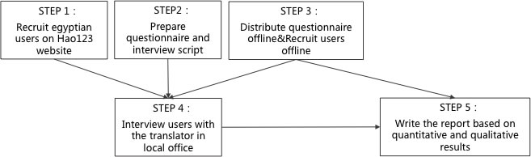
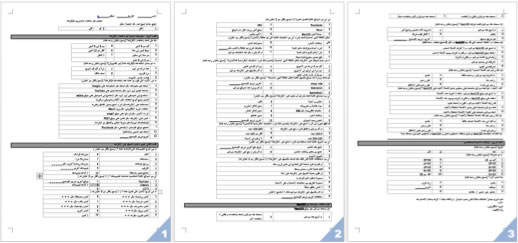

2013.12
Lead User Resercher
Wenjie Liao
Muhammad Zekry
Xiaoxi Mo
Bihao Wang
User In-depth Interview,
User Survey
It is a product of Baidu International Product Department. Hao123 chinese version was developed in 1999. It is a navigation website that directs access to popular local websites. And now it is a famous website and about hundreds of millions of of chinese would open this website everyday. Then in 2011, Baidu decided to promote this website to other countries. Now it is concentrated on countries where the internet infrastructure is less developed, such as Egypt, Brazil and Thailand. Hao123 is no doubt a perfect website for these areas for it helps those internet green hands find new websites conveniently.
The egyptian version: ar.hao123.com
The thai version:th.hao123.com
The brazilian version:br.hao123.com
Hao123 has been released in Egypt for 3 years and it also became the 6th website in Egypt according to the Alexa. Now the product manager wants to get some feedbacks about this website and some new needs in some specific parts, like video, game, religion, sports and so on.

We distributed our quesionniares in an office building and on a club activity. At that time, there are still some demonstrations in school, so we have to give up the original school distributing planning. It is a liitle pity,because students are our main users in Egypt. In the questionniare, we asked some questions about their current internet experience, internet behavior, their feeling about Hao123 and gave some options for them( all in Arabic language),for example:
How long have you been on the Internet?
What do you often do on the Internet?
Which type of videos/games do you like best?
How do you find these videos/games?
Do you know Hao123?
Rate the Hao123 website (from 1 to 5, from very satisfied to very unsatisfied)
Are you interested in our following interview research activity? If yes, write your name and mobile phone, we will contact you!
... ...

We total interviewed 10 users who always browses Hao123, 4 from online and 6 from offline.
Firstly, we gave the user 5 minutes to use the computer and show us what they do on the Internet as usual, including how they open Hao123 website, which part of Hao123 they often click, which websites they often visit. We mainly observed their operation. After that we asked them some questions like,
How do you know Hao123?
Do you set Hao123 as your homepage? If not, what is your homepage now? Why not set Hao123 as Homepage?
Do you understand the meaning of some icons? Can you recognize these?
Have you noticed some interesting contents in the rignt part and the bottom of the page? If no, why do you never notice here?
Which part of Hao123 do you like best? Why?
What do you think of the design of Hao123? color, layout? Rate it and explain the reason. Recommend us one website which you think is best in design.
What the advantage and disadvantages of Hao123 or some part of Hao123?
Would you recommend this website to your friends? If yes, What is your discription of Hao123 when you recommend this to your friend ? If no, why not ?
... ...
Here are pictures of some users, and another two users refused to have photo because of some religious reason.
 YANWEN GUO
YANWEN GUO